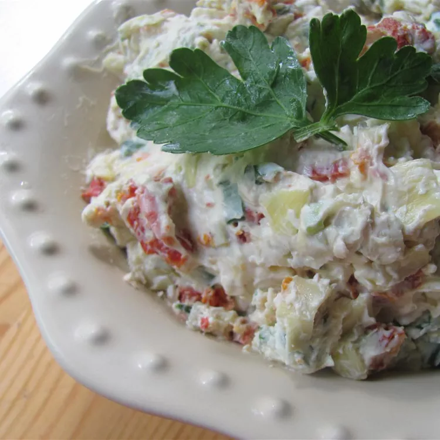

Cheese Spread
Cheese spread is a spread made from cheese, typically cheddar cheese, that is mixed with other ingredients to make it spreadable. It is often used as a dip for crackers or vegetables.
Ingredients
- 8 ounces of cheddar cheese, shredded
- 1/4 cup of mayonnaise
- 1/4 cup of cream cheese, softened
- 1/4 teaspoon of garlic powder
- 1/4 teaspoon of onion powder
- 1/4 teaspoon of Worcestershire sauce
- 1/4 teaspoon of hot sauce
- 1/4 teaspoon of salt
- 1/4 teaspoon of pepper
Instructions
- In a large bowl, combine the cheddar cheese, mayonnaise, cream cheese, garlic powder, onion powder, Worcestershire sauce, hot sauce, salt, and pepper.
- Mix until well combined.
- Refrigerate for at least 1 hour before serving.
- Serve with crackers or vegetables.
- Enjoy!
